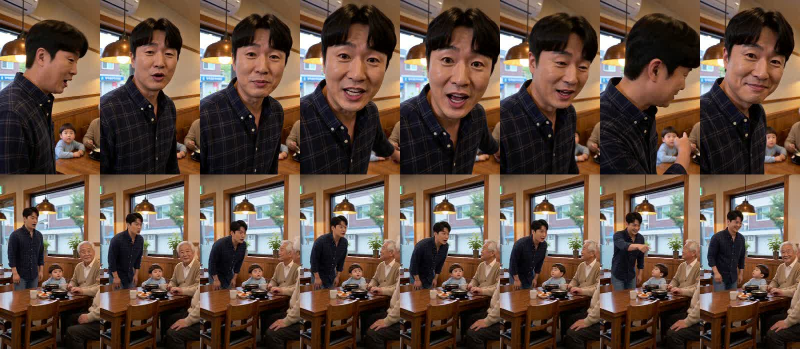
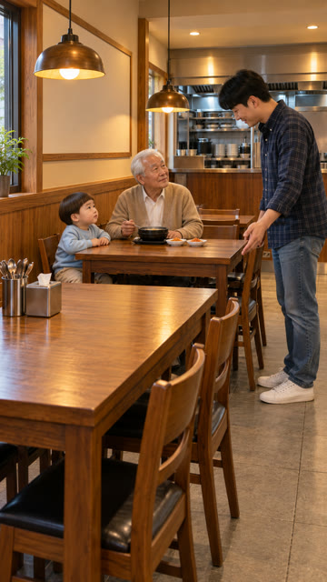
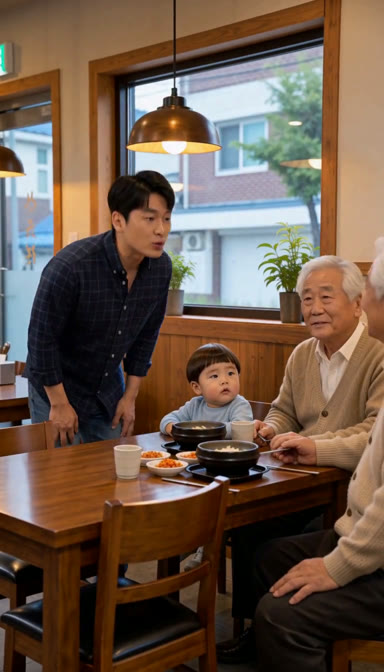
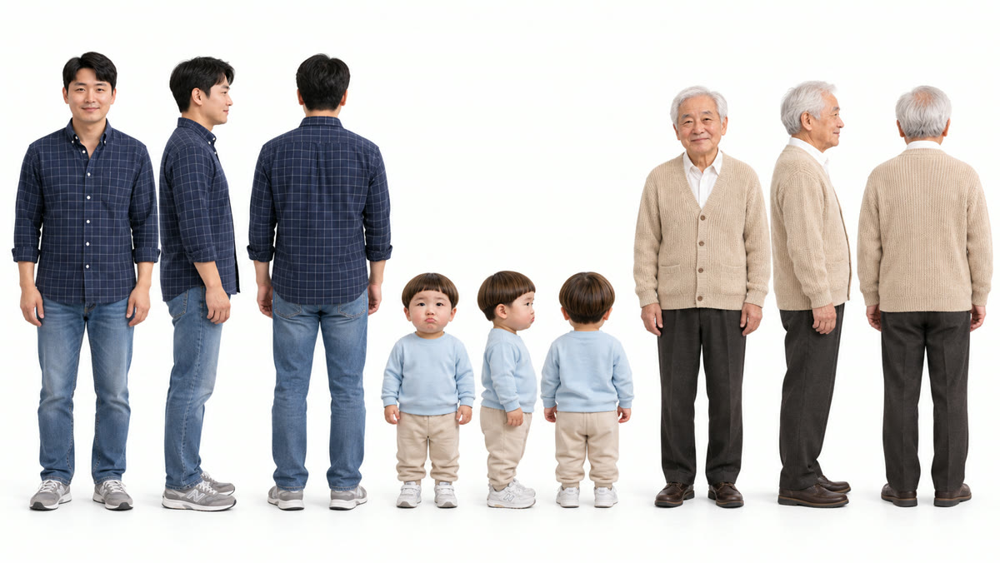

국밥집 3컷 — 지금 방식 vs 옛 방식
같은 시작 그림 · 같은 대사 «아이고 죄송합니다, 우리 자리는 저기야!» · 같은 길이(4.5초). 다른 것은 H3에 넣은 인물 참조와 나이·연기 줄뿐입니다.
지금 방식
인물 참조 = 도윤이 사진 한 장. 아빠 정본은 H3에 안 들어감.
옛 방식
인물 참조 = 이 편 인물 시트(아빠·도윤·할아버지 전신) + «24개월 · 아빠 키 절반 · 배우처럼 자연스럽게».
0.56초 간격 8장 (위 = 지금, 아래 = 옛 방식)

보이는 차이
- 도윤이: 옛 방식은 통통한 아기 얼굴에 작은 몸 — 두 살로 보입니다. 지금 방식은 이 컷에서 작게만 보이지만 다른 컷에서 4~5살처럼 보였던 바로 그 차이입니다.
- 아빠: 지금 방식은 H3가 클로즈업으로 당기며 얼굴을 새로 만들었고(정본과 다른 사람), 옛 방식은 시작 그림 구도 그대로 정본에 가까운 얼굴을 유지합니다.
- 연기: 옛 방식은 아빠가 고개를 숙였다 들며 손으로 자리를 가리키고, 할아버지·도윤이가 아빠를 올려다보며 반응합니다. 지금 방식은 아빠 혼자 렌즈를 보고 말합니다.
- 새 결함: 옛 방식 화면 오른쪽 끝에 할아버지가 한 명 더 보입니다(인물 시트의 앞·옆·뒤 세 모습을 다른 사람으로 읽은 것으로 보임). 도윤이 앞에도 뚝배기가 하나 더 생겼습니다.
- 대사 받아쓰기는 둘 다 정확합니다. 옛 방식은 컷 안 장면 전환이 0번입니다.
참고 그림
아빠 정본

시작 그림(두 방식 같음)

옛 방식 1초 지점

이번에 만든 국밥집 인물 시트(Codex 0원) — 아빠 정본 얼굴, 도윤이는 아빠 허리 아래 키.
사탕 2컷은?
사탕 편을 만든 뒤 설정이 바뀌어 파이프라인이 «처음부터 다시»로 막습니다. 그러면 시작 그림이 새로 그려져 같은 조건 비교가 안 되므로 이번에는 뺐습니다.